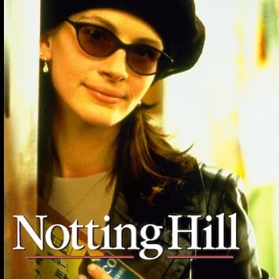

歌いたい夜
マンマ・ミーア！
海辺の結婚式とABBAの曲。気持ちを切り替えたいなら、最初のサビから一緒に歌ってみて。
おすすめ度 ★ 4/5観終わったあとも眠れない夜に。歌う、恋する、笑う、の３本から。
海辺の結婚式とABBAの曲。気持ちを切り替えたいなら、最初のサビから一緒に歌ってみて。
おすすめ度 ★ 4/5
映画スターと本屋の店主。ふたりの生活の差が、ひとことの告白にぎゅっと詰まっている。
おすすめ度 ★ 3/5
昨日と同じ自分でも、堂々と入っていくと部屋の空気まで変わる。主人公の歩き方に注目。
おすすめ度 ★ 3.5/5